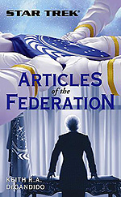

|


Literatura

| "STAR
TREK: ARTICLES OF THE FEDERATION" |
 |
Formato:
Paperback |
| Review
por Leandro M. Pinto |
IntroduoCoisa de cinco anos atrs, quando este missivista primeiro teve a idia de escrever a fanfiction Star Trek: Earth, DC, as premissas bsicas para este trabalho eram basicamente duas: primeiro, fazer uma histria baseada e ambientada no universo da poltica federada, de como o governo civil federado organizado; e segundo, dar uma passada sobre como seria a vida cotidiana na Terra de Jornada nas Estrelas. Desta forma, foi com agradvel surpresa que encontrei na lista de lanamentos recentes da Pocket Books o livro Star Trek: Articles of the Federation. O autor, Keith DeCandido, o baseou exatamente na primeira das duas premissas que eu havia desejado para a minha prpria histria, o que imediatamente serviu de indicao que aquele livro certamente seria uma das mais recentes obras lanadas pela Pocket Books que me interessaria. Assim, pelo ineditismo do tema no universo de Jornada nas Estrelas (at mesmo em livro), e pelo meu particular interesse do tema j ter previamente me colocado em pesquisa sobre estes aspectos no Cnone e Cronologia de Jornada, acreditei que uma reviso do livro para o Trek Brasilis estaria na ordem do dia. Vamos agora a ela. Sumrio Naran Bacco assume a Presidncia da Federao de Planetas Unidos em outubro de 2379, aps uma eleio convocada as pressas devido a renncia do ocupante anterior do posto, Min Zife. A renncia ocorreu devido a uma crise interna, por sua administrao ter secretamente suprido armas para os Tezwa, um planeta neutro prximo a fronteira com o Imprio Klingon. Este incidente veio tona quando os Tezwa acabaram utilizando estas armas para atacarem foras klingons e federadas, e ainda que a revelao tenha sido restrita a apenas um grupo seleto de membros do governo federado, o Presidente Zife no teve outra escolha a no ser renunciar. Esta questo se mantm como uma espcie de bomba-relgio em relao a administrao Bacco, a qual no quer eventualmente melindrar os aliados Klingons com a eventual revelao da real natureza dos Tezwa terem obtido equipamento federado. Naran Bacco humana natural da colnia de Cestus III, onde foi governadora por vrios mandatos, inclusive durante a Guerra Dominion, na qual teve que auxiliar na coordenao das defesas contra ataques Gorn. A Presidente conta com um grupo de assessores liderado pela sua Chefe de Gabinete Esperanza Piiero, tambm natural de Cestus III. Abaixo de Piiero h quatro Subchefes, respectivamente Z4 Blue, um nasatiano; Myk Bunkrep, uma zakdoniana; Xeldara Trask, uma tiburoniana, e Ashant Phir, uma humana. Outros membros incluem Willian Ross, Oficial Adjunto da Frota Estelar ao gabinete da Presidncia da Federao; Fred MacDougan, principal escritor de discursos; o Secretrio de Imprensa Kant Jorel, bajoriano; Principal Assessor para Segurana, Jas Abrik, trill; e o secretrio pessoal da Presidente, Sivak, vulcano. Em 2379 faz quatro anos que a Guerra Dominion terminou, e alguns meses aps o golpe de estado em Romulos que levou Shinzon a dominar por alguns dias o governo do Imprio. Aos dois primeiros meses de sua administrao, alm das necessidades de administrao regular do governo federado, Presidente Bacco e seu snior staff contam com diversas questes que demandam sua ateno, e a situao romulana ps-Shinzon uma destas questes, com o Imprio Romulano em uma crise institucional que o coloca a beira do colapso. Conflitos que surgiram aps o levante Remano liderado por Shinzon fizeram com que a Federao conseguisse ajuda Klingon para lidar com a situao, e a populao Remana no Imprio Romulano foi assim colocada sob a proteo Klingon com um mandato de protetorado. Aliado a isto, um posto avanado federado detecta uma antiga nave Romulana se dirigindo a ele, carregando refugiados remanos buscando asilo, alegando estarem fugindo de opresso de outros remanos. A situao delicada devido aos Klingons no verem com bons olhos a Federao eventualmente cedendo asilo a este grupo de remanos, uma vez que os Klingons que esto com a jurisdio sob esta faco romulana. Alm destas disputa, Bacco tambm est tendo que gerenciar uma disputa entre os Carreons, um planeta-neutro, e um membro da Federao, Delta. Durante a guerra, o sistema de saneamento de Delta foi sabotado por foras Dominion, e Delta precisa do auxlio temporrio do sistema mais prximo a eles para se abastecerem com gua; Carreon no membro da Federao, mas conta com grande capacidade ociosa a qual seria o suficiente para Delta se manter enquanto reparos so feitos no sistema de tratamento gua do planeta. Contudo, os carreonanos so desafetos de longa data dos deltanos, e no esto levando realmente a srio as negociaes, apenas protelando os deltanos por nenhuma razo em especial. Frente a isto, a presidncia da Federao tem que intervir, e depois de tentativas mais amenas de seus assessores, Bacco tem que pressionar os carreonanos na parede durante uma cpula na Terra entre as duas espcies em disputa, e chamar o blefe deles. Alega ao representante de Carreon que a Federao manteve boa vontade aos carreonanos durante todo este tempo, mas no pode se dar ao luxo de continuar aceitando a protelao sem justificativa deles, e inclusive coloca ameaa militar como peso no seu argumento. Sem muita alternativa, o representante carreonano tem que aceitar os termos originais da troca de favores entre as duas espcies. Para lidarem com a crescente onda de violncia e tenses entre romulanos e remanos, estes ltimos os quais foram realocados do hostil planeta Reman para um continente em Romulos, a Federao prope aos Klingons a realocao da populao Remana para um outro sistema estelar neutro, em uma regio desabitada a qual os Klingons recentemente anexaram, mas nunca realmente fizeram uso algum. A Presidente Bacco encarrega dois de seus embaixadores para a tarefa de negociao com os Klingons: o prprio embaixador federado em Quo'nos, Alex Rozhenko, filho de Worf, e o embaixador Spock, a qual a Presidente havia requisitado que viesse de Romulos para poder aconselhar seu gabinete sobre o melhor curso de ao na crise romulana. Os Klingons aceitam a proposta federada de realocao remana, mas mantm a posio de que a Federao deve negar asilo poltico aos remanos que se dirigem para o Posto Avanado 22, na antiga nave a viagem do grupo de remanos na antiga nave leva pelo menos coisa de oito semanas, dado que a nave deles s pode desenvolver dobra 3,12. Frente a este problema, o gabinete de Bacco e Spock preparam um plano de modo aos remanos terem uma outra alternativa alm apenas do pedido de asilo a Federao, ou a volta territrio Romulano controlado pelos Klingons, no qual certamente seriam presos. O plano envolve a USS Intrepid secretamente interceptando a nave remana antes que uma nave Klingon chegue no Posto Avanado 22, para colocar os remanos sob sua custdia. Contudo, algum tempo depois da chegada dos Remanos ao Posto Avanado, eles precipitadamente fazem uma coliso suicida contra o Posto Avanado, o que custa a vida de trs federados e de todos os remanos a bordo da nave. A agenda de temas domsticos de Bacco inclui a necessidade da Presidente fazer indicaes para diversos cargos e chefias de departamentos do governo federado, nomeaes estas que devem passar pelo crivo do Conselho da Federao. Considerando as relaes um tanto quanto hostis entre a sua administrao do Palais de La Concorde (sede do executivo federado) e o Conselho da Federao, Bacco antev disputas polticas acirradas com o legislativo federado sob estas nomeaes. Piiero e os demais assessores trabalham tambm na organizao da primeira viagem de Bacco por alguns dos planetas-membros da Federao, na qual Bacco ir atender eventos de estudo de gentica em Andor, a conveno anual do Conselho de Comrcio Federado ocorrendo em Vulcan, e tambm ir at Cestus III para realizar o arremesso inicial da temporada de beisebol deste planeta. Este evento meio como a menina-dos-olhos da Presidente, sendo ela f ferrenha de beisebol, e tendo sido uma das responsveis pela criao de uma liga profissional em Cestus III. Contudo, Piiero tem dificuldades de conciliar a agenda para a viagem, pois a janela de tempo curta para a viagem que ocorrer por meados do ano, uma vez que logo aps a viagem, est marcada a visita de uma delegao diplomtica de que ficou de visitar a Terra aps um recente Primeiro Contato realizado pela Frota Estelar. Em maio, aps a viagem de Bacco, a Presidncia e o Conselho da Federao preparam um jantar de gala oficial para recepcionarem a delegao de diplomatas de Trinni/ek, com os quais a Federao fez Primeiro Contato. A negociao e preparao do evento levou bons meses, pelos quais os Trinni/ek se mostraram muito entusiasmados pela oportunidade. Contudo, bem na ocasio do jantar, com toda a delegao federada reunida no salo em Paris, algo fez com que a delegao Trinni/ek repentinamente se mostrasse extremamente rude e facilmente ofendida um comportamento completamente oposto aos das conversas anteriores, e um comportamento que o Capito da nave federada que os escoltou at a Terra, a USS Io, relatou que havia se iniciado logo aps eles deixarem o sistema estelar Trinni/ek. Imaginando que a pode haver mais do que aparenta, Bacco pediu para a Io investigar, e uma nova tentativa de encontro formal realizada em agosto, mas novo fiasco, quando Trinni/ek novamente cai doente na cmara do Conselho da Federao. Aps uma extensa investigao fisiolgica (somado a informao de que a tripulao da Io prximo ao sistema Trinni/ek tambm est sofrendo efeitos) descobre-se que os Trinni/ek desenvolveram um equilibro de dependncia muito forte com o campo eletromagntico do sistema deles, e viagens fora-do-sistema provoca estas reaes estranhas. Assim, a Federao e os Trinni/ek decidem que uma espcie no afetada pelo campo eletromagntico da estrela do sistema Trinni/ek servir bem para intermediar a diplomacia entre as duas naes. Entre outras aparies pblicas de Bacco, h ocasies como quando a Presidente compareceu ao funeral do ex-Presidente Jaresh-Inyo, e quando discursou para os formandos da classe de 2380 na Academia da Frota. Na ocasio, Bacco relatou os eventos que ocorreram durante a Guerra Dominion, quando a Enterprise visitou o planeta-natal Gorn para iniciar negociaes diplomticas de modo a Federao ter a ajuda dos Gorns na guerra. Mas um golpe de estado ocorreu bem naquele momento, com os Gorns ento fazendo um avano contra territrio federado justamente atacando Cestus III. Bacco relata como a tripulao da Enterprise usou uma combinao de diplomacia e posio firme para virar o jogo e conseguir resolver a questo com os Gorns e eventualmente ganhar seu apoio. Uma reprter federada, Ozla Gravin faz uma viagem por Tezwa, para escrever uma matria sobre as condies difceis que esta espcie se encontra aps o confronto deles contra os Klingons. Durante esta viagem, Ozla esbarra com informao sobre a real origem das peas de artilharia federadas que o ento Primeiro-Ministro Tezwa havia obtido para combater os Klingons, atravs de uma conversa casual com uma ex-amante de um militar tezwano morto. Ozla procura ento iniciar uma investigao mais profunda a respeito. Em agosto, durante os procedimentos para a evacuao dos remanos para o sistema estelar klingon de Klorgat IV, uma das luas deste planeta repentinamente explode sem razo bvia aparente. Tanto os Klingons como os Federados suspeitam de mo romulana no incidente, particularmente de um Almirante Romulano renegado, Mendak, que conta com algumas aves-de-rapina, e investigaes se iniciam, com o Palcio de La Concorde despachando para a regio um time do Corpo de Engenharia da Frota Estelar, para avaliar a destruio da lua, ainda que a exploso no tenha realmente matado ningum por ter ocorrido quando ela se encontrava do outro lado do planeta onde os remanos esto sendo realocados. Em agosto, com a equipe j contando com Dogayn, substituindo Xeldara como um dos vice-chefe de gabinete, a equipe do Palais articular com alguns representantes planetrios no Conselho da Federao para fazer com que uma proposta de continuidade de auxlio Cardssia seja aprovada pelo Conselho. A informao de que a representante de Alfa Centauri intenciona mudar de opinio, passando a votar no para a proposta, acionou o alerta amarelo na equipe de Piiero ela nunca vota contra a mar a no ser caso a proposta envolva Alfa Centauri diretamente. Assim, a equipe poltica de Bacco faz alguns bem-bolados com alguns representantes, incluindo o de Betazed. Ozla Graniv tem avanos na sua investigao jornalstica de modo inesperado. Enquanto estava em Deneva seguindo algumas pistas, a trill arrancada do chuveiro por dois capangas de um chefe local do Sindicato rion, Ihazs. Ainda gotejando na frente do jocoso mafioso, uma surpresa Ozla recebe informao relevante de Ihazs. Ele racionaliza que no interessante ter a trill futricando ali no seu quintal tanto quanto no interessante mandar eliminar uma jornalista de alto-perfil como ela, o que traria ateno indesejada assim, Ihazs d uma palhinha para a jornalista com a condio de que ela deixe Deneva e procure confirmar aquelas informaes tambm com outra fonte, para a usar publicamente, pois Ihazs ficaria muito desgostoso de ser mencionado publicamente. A informao que ele passa que de fato, eles forneceram o armamento para os Tezwa, e confirma que a origem disto foi atravs do gabinete do ex-Presidente Zife e mais ainda, que foi o Almirante Ross quem exigiu de Zife a sua renncia devido a isto, sob a mira de feiser, nada menos. Aps o SCE confirmar que foi de fato a ave-de-rapina capital do Almirante Mendak a responsvel pela cadeia-de-eventos a destruir a lua do sistema Klingon, Bacco faz uma reunio com ambos os embaixadores, Kmtok e Kalavak. O Embaixador Klingon, Kmtok, exige uma resposta militar contra o Imprio Romulano, mas o embaixador Romulano afirma que Mendak era um renegado que agiu por conta prpria, e passa a informao de que ele foi encontrado morto, aps cometer suicdio cerimonial, e deixou uma mensagem-manifesto contra o governo romulano atual. Como Bacco e o embaixador klingon confabulam a ss, certo que isto uma manipulao do atual governo romulano, ainda que bem feita contudo, Bacco no pode suportar um avano militar contra Romulos no presente momento, uma vez que eles no tem dados conclusivos que suportem tal ao (dado que os Romulanos denunciam publicamente Mendak como renegado), e o momento seria inoportuno para uma ao destas, fosse como fosse. Embora um tanto quanto desgostoso, Kmtok aceita a avaliao de Bacco, e a ir levar para o Alto Conselho. Bacco tambm prope o embaixador pedir para Markot se encontrar com ela em uma conferncia de cpula dentro de algumas semanas. J por outubro, Ozla retorna para a Terra e se rene com Jorel, o Secretrio de Imprensa. Sem delongas, o informa que sabe da real razo da renncia de Zife, e que a no ser que o Palais tenha uma razo muito boa para ela no publicar a matria, ela assim o far. Jorel no d muito crdito alegao da trill, mas uma conversa com Piiero faz com que ele tambm perceba a gravidade das acusaes e sua fundamentao. Oito anos antes, no incio da administrao Zife, a Guerra Dominion estava para estourar, e a parania e pnico eram presenas constantes. Koll Azernal, Chefe de Gabinete de Zife, e o Secretrio de Inteligncia Militar da Presidncia, Nelino Quafina, coordenaram um esforo de bastidores para armar as escondidas os Tezwas, de modo que eles pudessem eventualmente servirem de linha de defesa Federao na guerra. Contudo, anos depois, quando durante a crise Tezwa, o Presidente Zife e seu Chefe-de-Gabinete enviaram uma fora conjunta klingon-federada para o planeta, assim o fizeram sabendo que Tezwa estava pesadamente armada com esta artilharia federada, e nada informaram a ningum. O resultado disto foi inmeras baixas de ambas as naes antes que a tripulao da nave federada conseguisse neutralizar as armas. Operativos da Frota Estelar acabam descobrindo a real origem das armas, mas se encontram em uma posio difcil. A mera denncia destas aes acabaria sendo custosa para as relaes entre os Klingons e a Federao, pois o Imprio no mnimo acabaria exigindo que entregassem Zife para julgamento em Qounos, ou na pior hiptese, romperiam os acordos e iriam para a guerra nenhum cenrio que a Federao deseja. Assim sendo, o Almirante Ross exigiu que Zife e seus assessores renunciassem aos seus postos. Bacco pressiona Ross para confirmar a histria completa, e ele o faz. A Presidente da Federao especula como que o Almirante podia se sentir em posio de cometer uma deciso arbitrria como aquela, no que Ross procura racionalizar que foi para proteger os melhores interesses da Federao ao mesmo tempo em que serviu para um Presidente pagar o preo por seus erros. Alm de ponderar a respeito de que a coisa poderia gerar uma gravssima crise com os Klingons, e em troca da aposentadoria definitiva de Ross, Ozla acaba concordando em no publicar a matria. Assim, o Almirante concorda em se aposentar da Frota e se retirar da vida pblica. Mas no final da conversa, Bacco especula que aparentemente, Ross e seus operativos no fizeram Zife apenas renunciar... ela lembra que o ex-Presidente no pode ser localizado de modo algum para comparecer ao funeral do Presidente Inyo. A isto, Ross apenas evasivo, e pondera para si mesmo que tem que poupar Bacco desta parte da verdade, tanto para o bem dela, como para o bem da organizao a qual pertence. Aps alguma relutncia de meses, um ministro dos Tzenkethi envia secretamente seu filho de dois anos para uma instalao mdica federada. A idia geral aqui que uma proeminente mdica da Federao, Rebeca Emanuelli, opere o garoto, por ela conhecer bem a fisiologia deles e saber realizar um delicado procedimento. Contudo, Emanuelli se recusa a sequer cogitar a idia. Ela foi prisioneira dos Tzenkethi durante quatro anos, durante os quais comeu o po-que-Khaless-amassou na mo deles, sendo obrigada a trabalhar dia-e-noite no tratamento de tzenkethianos, e passou sofrimento considervel, e problemas familiares e emocionais depois que finalmente conseguiu ser devolvida a Federao. A Presidente Bacco tem uma conversa reservada com ela, e argumenta que o sentimento dela totalmente compreensvel, mas da mesma forma, ela no pode se entregar a irracionalidade gerada por isto, e procurar ser melhor que seus captores. Se ela no realizar a operao, tudo o que tero um garoto morto, um ministro tzenkethiano que aceitou at cair em desgraa e priso por no revelar que mandou propositalmente o filho para Federao, e um inimigo ainda mais fantico contra eles. Aps alguma sria ponderao, Emanuelli acaba aceitando realizar a operao, mas infelizmente j era tarde demais para o garoto, pois a doena estava muito avanada. Apesar de seus melhores esforos, Emanuelli no consegue salv-lo. Finalmente, a Presidente Bacco, o Chanceler Martok e a Preator TalAura realizam uma conferncia de cpula em meados de dezembro, no sistema neutro de Grisella. Os trs chefes de nao discutem as melhores maneiras de consolidarem as solues encontradas para a questo remana, e diversos outros itens na agenda klingon-federada tambm so azeitados, para satisfao de ambas as partes. Martok estava usando a oportunidade para sentir a temperatura da gua em relao a Presidente da Federao, a qual estava conhecendo em pessoa ali, e ficou com uma boa impresso dela, por sua postura firme e sua atitude no-nonsense, especialmente relacionado a peitar a Preator romulana. A Preator informa que a Comandante Donatra renegada est prestes a declarar secesso de alguns sistemas romulanos, e que a Federao e os Klingons no devem ajudar estes rebeldes. Contudo, Bacco lembra que foi eles mesmos, TalAura e Donatra inclusas, que armaram esta cama quando se envolveram no rolo com Shinzon agora que deitem nela. Finalmente por final de dezembro, a Presidente confabula com sua Chefe-de-Gabinete, momentos antes de iniciarem as cerimnias de ingresso de um novo membro da Federao, os Koas. Bacco desabafa um pouco a respeito de todos os problemas que tiveram neste primeiro ano de administrao, mas Piiero tambm a lembra de todas as coisas boas que conseguiram e conquistaram, e as que ainda h por virem. Com isto, ambas seguem para iniciarem os trabalhos da cerimnia com o novo Embaixador Koano na Federao. Avaliao Em poucas palavras, podemos definir Star Trek: Articles of the Federation como sendo "The West Wing" em Jornada nas Estrelas". O estilo da srie de TV da NBC criada por Aaron Sorkin obviamente serviu de inspirao para a premissa do livro, e o prprio DeCandido admite abertamente isto, em algumas postagens nos fruns da Pocket Books. uma idia intrigante e bem-vinda, sem dvida alguma, e uma que sempre me interessou. Afinal de contas, por dez filmes e coisa de setecentos episdios espalhados por cinco sries, a franquia nunca realmente detalhou muito como que seria a organizao do governo civil da Federao de Planetas Unidos. Seja devido a premissa da franquia no ser sobre isto, seja para no tirar tempo de tela de tramas mais focadas nos personagens centrais, seja por outras razes, tudo muito bem. Mas depois de se construir um universo to rico e detalhado como o de Jornada nas Estrelas, fatal que surja curiosidade para saber mais detalhes de aspectos que no costumamos ver na tela, e a organizao social e poltica desta civilizao um destes aspectos obscuros sobre os quais seria interessante se conhecer mais. Uma das primeiras coisas interessantes que uma obra como Articles of the Federation nos oferece dar nome aos bois. Na grande maioria das vezes na franquia, quando se mencionando as aes de um dado governo, sempre um tal de "Conselho da Federao" para c, "Alto Comando Klingon" para l, "Comando da Frota Estelar" para acol. Nunca tivemos rostos, nomes ou caractersticas das pessoas que compe estes rgos. Contudo, um problema que ocorre desta oportunidade que organizar todos os personagens que podem ser utilizados algo delicado, e da mesma maneira que em Earth, DC, o livro Articles of the Federation tem o problema de acabar tendo personagens at demais um "elenco de milhares", com personagens indo e vindo por todo o livro, o que pode se tornar confuso e difcil de se gerenciar. Desta forma, a obra acaba se focando pouco em cada um deles individualmente, e a maioria acaba apenas servindo como peas para manter as tramas andando, sem conhecermos mais detalhes sobre suas personalidades. As excees ficam por conta das figuras mais notrias da histria, como a Presidente Nan Bacco e sua Chefe-de-Gabinete, Esperanza Piiero. No demora muito e fica claro que Bacco tem uma personalidade forte, bem no gnero take-no-crap, e interessante observar que para uma sofisticada poltica federada, Bacco desbocada como ningum mais na franquia... embora tida como excelente oradora, profanidades leves so corriqueiras no vocabulrio informal da Presidente. Os desdobramentos iniciais do governo de Bacco so como qualquer governo inicial que ainda est sentido a temperatura da gua no ambiente poltico em que se encontra, e isto bem retratado pela maneira com que a Presidente se relaciona com o restante do Conselho. Seja hoje em nosso universo imperfeito, seja no futuro da utopia federada, polticos ainda sero polticos, afinal de contas. Piiero de muitas maneiras serve como contraponto para manter as atitudes mais ressaltadas de sua chefe em xeque, o que deu um bom equilbrio entre as duas mulheres. Como Chefe-de-Gabinete, Piiero a que mais interage com o restante do snior staff da Presidncia. Acho que at se poderia tentar traar um paralelo entre a estrutura do staff de Bacco e a organizao de uma nave estelar da Frota, com Bacco como Capito, Piiero como XO e os demais como a tripulao de ponte, mas seria algo precipitado, pois a maneira pela qual eles interagem entre si difere fundamentalmente da organizao mais militar do comando de uma nave alm de os temas serem fundamentalmente diferentes, tambm. Embora seja um livro basicamente voltado mais a trama do que a personagens, os "arcos de histria" se intercalam de modo de que no h realmente nenhuma histria "A" principal que se sobressai completamente uma da outra. As crises e questes que surgem no gabinete da Presidncia vo sendo tratadas a medida que o tempo avana na trama (que ocupa um ano completo, janeiro a dezembro de 2380). O que mais se poderia considerar como o "fio da meada" geral do livro como um todo a razo real que levou o Presidente anterior a renunciar, pelo escndalo do fornecimento de armas para os Tezwas; mas mesmo esta trama no toma completamente a ateno para si. Citaes a eventos anteriores de todas as sries de Jornada nas Estrelas so abundantes, e os caadores de referncias se divertiro as encontrando. apenas natural isto, considerando que a Administrao Bacco tem que lidar com as conseqncias e seqelas de diversos eventos recentes na histria da Federao, como a Guerra Dominion e o golpe de Shinzon no Imprio Romulano mas mesmo referncias at a poca de Jornada nas Estrelas: Enterprise tem espao. Alm disto, muitas das questes que surgem na histria, como o problema com ex-Presidente Zife e as citaes de Bacco sobre o ataque Gorn a Celsus III so eventos que ocorreram em outros livros editados pela Pocket Books, como Star Trek: A Time for War, A Time for Peace, ou tambm em quadrinhos, como Star Trek: The Next Generation - The Gorn Crisis, editada pela WildStorm Comics. Embora os eventos da literatura e quadrinhos da franquia no sejam realmente cnones, sempre so teis para se enriquecer qualquer trama na franquia, e so sempre adies bem vindas. Citaes aqui e ali a Presidentes anteriores da Federao tambm so abundantes. Uma coisa a qual o livro me decepcionou um pouco foi em elaborar mais sobre como que seria organizado o governo local terrqueo. Mas fora a apario ocasional do representante da Terra no Conselho da Federao, no h nada que realmente detalhe como que a Terra em particular organizada politicamente. Para exemplificar, a minha fanfiction Star Trek: Earth, DC, se foca mais na poltica da Terra do que apenas na poltica federada, com a trama "A" da fanfic sendo a eleio justamente do representante da Terra no Conselho da Federao. A falta destes elementos em Articles of the Federation no algo necessariamente errado da parte de DeCandido, sem dvida uma escolha criativa que o autor fez, de focar mais na Federao do que na Terra. Mas seja como for, algo que eu esperava que houvesse mais, pois a oportunidade era muito boa para se deixar passar. Foi interessante ver a organizao geral do governo federado que DeCandido extrapolou dos dados cnones j existentes no universo de Jornada, bem como adicionando elementos que ela mesmo desenvolveu. Trocando em midos, seria como a Presidncia dos Estados Unidos em controle de uma nao como uma Unio Europia mais formalizada. Algumas caractersticas em particular do governo federado retratado que o Presidente da Federao quem conduz as sesses de debate do Conselho da Federao, o que combina com a coisa de sempre haver mais citaes ao Conselho do que a Presidncia nos episdios e filmes, o que indica a grande importncia do legislativo no governo federado. A influncia da Frota Estelar no governo tambm analisada pelo autor, embora tambm no tanto quanto eu gostaria, e no da maneira que eu preferiria. Em dado momento, durante um discurso, Bacco faz a seguinte citao: Starfleet is the glue that holds the Federation together (A Frota Estelar a cola que mantm a Federao unida.) Nan Bacco, Star Trek: Articles of the Federation uma frase que com poucas palavras diz muito realmente sobre a relao Federao/Frota, pois pode ser interpretada tanto de maneira positiva como negativa. De maneira positiva, pode ser utilizada no discurso que Bacco dava para os formandos da Academia, de maneira a simbolizar a importncia da Federao e coisa e tal. Mas da mesma forma, perfeitamente possvel se fazer uma avaliao cnica da frase, como uma admisso velada de que aparentemente, a nica coisa que mantm a Federao unida a mo-de-ferro de sua organizao militar e a Frota Estelar uma organizao militar, por mais eufemismos rondenberrianos que o fandom queira usar para no a retratar assim. Assim, um desenvolvimento maior sobre como exagerada a influncia da Frota nos dizeres da Federao como um todo seria muito bem vindo, mas no muito houve em Articles of the Federation a no ser as passagens sobre o papel do Almirante Ross na remoo do Presidente Zife alm tambm de deixar as dicas que Ross operava em nome da Seo 31 nesta operao. Bem, no frigir dos ovos, um livro agradvel e interessante, embora tenha sido uma leitura que demandou mais ateno do que o costume, para se poder manter em mente as inmeras tramas correndo paralelas conduzidas por grande nmero de personagens, algo que o leitor precisa ter em mente, para acabar no se perdendo na leitura. A minha percepo pessoal do livro como um todo, baseado muito no gosto pessoal, justificaria um 3,5 em 4 de nota para a obra, mas eu acho mais adequado utilizar como nota final uma avaliao mais fria e realista, sem muita influncia do fato de que o livro certamente me agradaria pela simples premissa em si. Desta forma, um 3 em 4 de nota reflete de maneira mais justa a qualidade da obra, e de modo algum uma nota depreciativa, muito pelo contrrio. Star Trek: Articles of the Federation uma obra que faltava muito no universo de Jornada nas Estrelas, e sem dvida ir saciar a curiosidade de muitos fs que como eu, tambm sempre imaginaram como que a Federao de Planetas Unidos governada e administrada. Se a sociedade federada realmente vista como uma utopia, como ento mantida assim, e at que ponto realmente uma. |